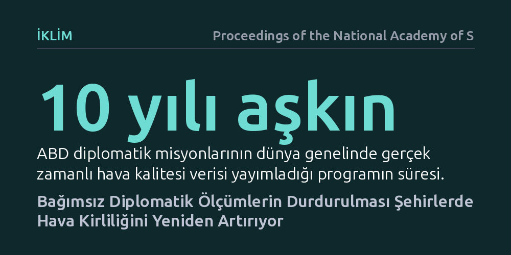

IKLIM · Proceedings of the National Academy of Sciences · 2026-10-07
Çalışma, ABD büyükelçiliklerinin on yılı aşkın süredir yürüttüğü bağımsız hava izleme programının askıya alınmasının şehirlerdeki kirliliğe etkisini inceliyor. Bulgular, yerel yönetimlerin veri paylaşmadığı bölgelerde bağımsız izlemenin kalkmasının hava kirliliğinde belirgin bir artışa yol açtığını gösteriyor.
Temiz hava politikalarının başarısı için yerel yönetimlerin iyi niyetine değil, şeffaf ve kesintisiz bağımsız denetim mekanizmalarına ihtiyaç olduğunu kanıtlıyor.

Şehirlerde yaşayan milyonlarca insanın soluduğu havanın kalitesi, çoğu zaman yerel yönetimlerin açıkladığı resmi verilere dayanır. Ancak yönetimler ekonomik veya siyasi kaygılarla bu verileri paylaşmaktan kaçındığında ya da manipüle ettiğinde, toplum sağlığı doğrudan tehlikeye girer. ABD büyükelçilik ve konsolosluklarının çatılarına yerleştirilen bağımsız izleme istasyonları, on yılı aşkın süre boyunca gerçek zamanlı partikül madde verilerini kamuoyuna duyurarak bu bilgi tekelini kırmıştı.
Bağımsız bir aktörün sunduğu şeffaf veri, yerel yönetimler üzerinde güçlü bir kamuoyu baskısı oluşturarak hava kalitesini iyileştirme adımları atmalarını zorunlu kılmıştı. Ancak bu programın aniden durdurulması kritik bir soruyu gündeme getirdi: Dış denetim ve şeffaf veri akışı ortadan kalktığında, kazanılan çevre standartları korunabilir mi, yoksa kirlilik eski seviyelerine geri mi döner?
Araştırmacılar bu soruyu yanıtlamak için dünya çapında ABD diplomatik misyonlarının hava kalitesi ölçümü yaptığı kentleri mercek altına aldı. On yılı aşkın süredir toplanan istasyon ölçümleri ile yüksek çözünürlüklü uydu tabanlı partikül madde (PM2.5) tahminleri bir araya getirildi.
Programın askıya alındığı dönüm noktası, doğal bir deney ortamı olarak değerlendirildi. Ekonometrik modelleme sayesinde mevsimsel hava hareketleri, rüzgâr yönleri ve bölgesel ekonomik dalgalanmalar gibi dış etkenler istatistiksel olarak kontrol edilerek, yalnızca bağımsız izlemenin durdurulmasının yarattığı net etki hesaplandı.
Elde edilen bulgular, bağımsız denetimin sona ermesinin kirlilik kontrolünde gerilemeye yol açtığını ortaya koydu. Büyükelçilik verilerinin kesilmesinin ardından, özellikle yerel yönetimlerin güvenilir ve şeffaf hava verisi sunmadığı kentlerde partikül madde yoğunluğunun yeniden belirgin biçimde arttığı gözlendi.
Şeffaf ve bağımsız bilginin yokluğu, yerel yönetimler ve kirletici sanayiler üzerindeki kamuoyu denetimini zayıflattı. Gerçek zamanlı uyarıların kesilmesiyle birlikte halkın farkındalığı azaldı; bu durum karar vericilerin kirlilikle mücadele politikalarını gevşetmesine ve denetimsiz emisyonların yeniden yükselmesine zemin hazırladı.
Bu sonuçlar, çevre politikalarında kalıcı başarının yalnızca düzenlemelere veya vaatlere emanet edilemeyeceğini, kesintisiz ve şeffaf bilgi akışının hayati bir denetim aracı olduğunu gösteriyor. Bir kere kazanılmış gibi görünen çevre iyileşmeleri, bağımsız kamuoyu gözetimi çekildiği anda hızla tersine dönebiliyor.
Çalışma, küresel çevre yönetişiminde üçüncü taraf izleme mekanizmalarının ve açık verinin vazgeçilmezliğini vurguluyor. Halkın soluduğu havayı tam olarak bilmesi sağlanmadıkça, yerel otoritelerin kirliliği azaltma yönündeki teşvikleri yetersiz kalmaya mahkûm görünüyor.